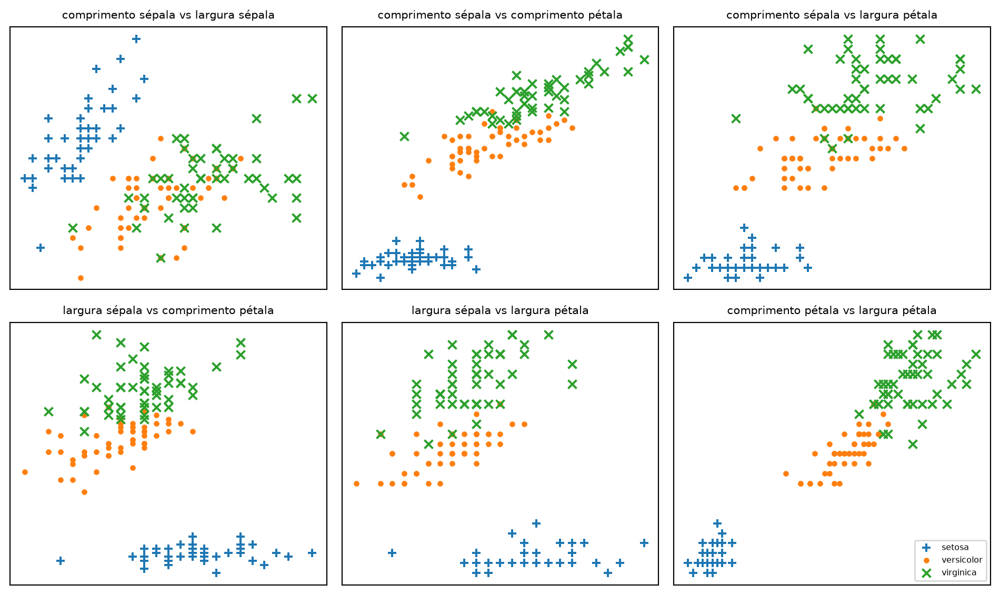

import requests
data = requests.get(
"https://archive.ics.uci.edu/ml/machine-learning-databases/iris/iris.data"
)
with open('iris.dat', 'w') as f:
f.write(data.text)Exemplo: O Dataset Iris
Nota
Esta seção corresponde a Example: The Iris Dataset, do capítulo 12 de Grus (2019).
O Iris é um clássico do aprendizado de máquina. São 150 flores de três espécies, e para cada uma temos quatro medidas: comprimento e largura da pétala, comprimento e largura da sépala. A tarefa é prever a espécie a partir das quatro medidas.
O livro-texto baixa o arquivo do repositório da UCI:
Importante
O chunk acima não é executado neste livro — repare no eval: false.
O arquivo já está em dados/iris.data, commitado no repositório. Um livro que faz chamadas de rede a cada renderização é frágil: basta a UCI sair do ar, mudar de URL ou ficar lenta para o material inteiro parar de compilar. O código fica aqui porque saber de onde o dado veio é parte da lição; o que não precisa acontecer toda vez é o download.
Os dados são separados por vírgula, com os campos:
sepal_length, sepal_width, petal_length, petal_width, classA primeira linha, por exemplo:
5.1,3.5,1.4,0.2,Iris-setosaCarregando os dados
Nossa função de vizinhos espera LabeledPoint, então é assim que vamos representar cada flor:
from typing import Dict, List
import csv
from collections import defaultdict
from scratch.linear_algebra import Vector
from scratch.k_nearest_neighbors import LabeledPoint, knn_classify
def parse_iris_row(row: List[str]) -> LabeledPoint:
"""
sepal_length, sepal_width, petal_length, petal_width, class
"""
measurements = [float(value) for value in row[:-1]]
# a classe vem como "Iris-virginica"; queremos só "virginica"
label = row[-1].split("-")[-1]
return LabeledPoint(measurements, label)
with open('dados/iris.data') as f:
reader = csv.reader(f)
iris_data = [parse_iris_row(row) for row in reader if row]
# Agrupamos também por espécie, para poder desenhar
points_by_species: Dict[str, List[Vector]] = defaultdict(list)
for iris in iris_data:
points_by_species[iris.label].append(iris.point)
len(iris_data), sorted(points_by_species)(150, ['setosa', 'versicolor', 'virginica'])
Nota
Três diferenças em relação ao código do livro, todas por causa do ambiente deste material:
- O caminho é
dados/iris.data, nãoiris.data. O_quarto.ymldefineexecute-dir: project, então o diretório de trabalho de todo chunk é a raiz do projeto, esteja o.qmdonde estiver. - O
if rowno final da compreensão descarta a linha em branco no fim do arquivo da UCI, que faria oparse_iris_rowestourar. LabeledPointeknn_classifynão são redefinidos aqui: vêm descratch.k_nearest_neighbors, o mesmo código que você escreveu na seção anterior. Cada página deste livro roda num kernel próprio, então nomes definidos numa página não existem em outra — mas o pacotescratch, copiado literalmente do repositório do livro-texto, existe em todas. Importar dali não é atalho: é o mesmo classificador, só sem reescrevê-lo. Ressalva: nem todo módulo descratché seguro de importar assim de qualquer página — alguns têm efeito colateral na importação (visualization.pygrava nove PNGs no disco;working_with_data.pyabrestocks.csve faz asserções sobre dados aleatórios sem semente fixa). Os capítulos que precisam dessas funções as escrevem em linha, em vez de importar o módulo inteiro.
Olhando os dados
Gostaríamos de visualizar as medidas para ver como variam por espécie. O problema é que são quatro dimensões, o que dificulta o desenho. Uma saída é olhar os gráficos de dispersão para cada um dos seis pares de medidas:
from matplotlib import pyplot as plt
metrics = ['comprimento sépala', 'largura sépala',
'comprimento pétala', 'largura pétala']
pairs = [(i, j) for i in range(4) for j in range(4) if i < j]
marks = ['+', '.', 'x'] # três classes, três marcadores
fig, ax = plt.subplots(2, 3, figsize=(10, 6))
for row in range(2):
for col in range(3):
i, j = pairs[3 * row + col]
ax[row][col].set_title(f"{metrics[i]} vs {metrics[j]}", fontsize=8)
ax[row][col].set_xticks([])
ax[row][col].set_yticks([])
for mark, (species, points) in zip(marks, points_by_species.items()):
xs = [point[i] for point in points]
ys = [point[j] for point in points]
ax[row][col].scatter(xs, ys, marker=mark, label=species)
ax[-1][-1].legend(loc='lower right', prop={'size': 6})
plt.tight_layout()
plt.show()
As medidas realmente se agrupam por espécie. Olhando só para as sépalas, seria difícil separar versicolor de virginica — mas quando entram comprimento e largura da pétala, a separação fica clara. É exatamente a situação em que vizinhos mais próximos funciona bem.
Classificando
Primeiro dividimos os dados em treino e teste:
import random
from scratch.machine_learning import split_data
random.seed(12)
iris_train, iris_test = split_data(iris_data, 0.70)
assert len(iris_train) == 0.7 * 150
assert len(iris_test) == 0.3 * 150
len(iris_train), len(iris_test)(105, 45)
AvisoA semente não é opcional
random.seed(12) está ali para que este material seja reprodutível: sem ela, cada renderização do livro produziria uma divisão diferente, uma acurácia diferente e uma matriz de confusão diferente — e o número que você lê aqui não bateria com o que aparece na sua tela.
Todo chunk deste livro que usa aleatoriedade fixa a semente. Repare que é o random da biblioteca padrão, não o numpy.random — o livro inteiro é Python puro.
Os pontos de treino são os “vizinhos” que usaremos para classificar os pontos de teste. Falta escolher k. Pequeno demais (pense em k = 1) e os outliers têm influência exagerada; grande demais (pense em k = 105) e simplesmente prevemos a classe mais comum do conjunto. Numa aplicação real criaríamos um conjunto de validação para escolher; aqui vamos usar k = 5:
from typing import Tuple
# quantas vezes vimos cada par (previsto, real)
confusion_matrix: Dict[Tuple[str, str], int] = defaultdict(int)
num_correct = 0
for iris in iris_test:
predicted = knn_classify(5, iris_train, iris.point)
actual = iris.label
if predicted == actual:
num_correct += 1
confusion_matrix[(predicted, actual)] += 1
pct_correct = num_correct / len(iris_test)
pct_correct0.9777777777777777for (previsto, real), n in sorted(confusion_matrix.items()):
marca = "" if previsto == real else " <-- erro"
print(f"previsto {previsto:12s} real {real:12s} {n:3d}{marca}")previsto setosa real setosa 13
previsto versicolor real versicolor 15
previsto virginica real versicolor 1 <-- erro
previsto virginica real virginica 16Neste conjunto simples, o modelo acerta quase tudo. Há uma versicolor classificada como virginica — justamente o par que os gráficos de dispersão mostraram ser o mais difícil de separar — e o resto sai certo.
DicaNa prática:
scikit-learn
O mesmo experimento, com a biblioteca:
from sklearn.model_selection import train_test_split
from sklearn.neighbors import KNeighborsClassifier
from sklearn.metrics import confusion_matrix, accuracy_score
X = [p.point for p in iris_data]
y = [p.label for p in iris_data]
X_treino, X_teste, y_treino, y_teste = train_test_split(
X, y, test_size=0.3, random_state=12
)
modelo = KNeighborsClassifier(n_neighbors=5).fit(X_treino, y_treino)
previsto = modelo.predict(X_teste)
accuracy_score(y_teste, previsto)
confusion_matrix(y_teste, previsto)Sete linhas contra as trinta que escrevemos — e a acurácia não sai idêntica, porque o train_test_split embaralha de outro jeito e o desempate é diferente. A seção anterior mostrou onde o scikit-learn realmente ganha: indexação, pesos por distância, escala. Neste dataset — 150 pontos, 4 dimensões — nada disso pesa; força bruta em Python puro já é instantânea. Aqui o que a biblioteca economiza é só digitação. A vantagem de verdade aparece quando os dados crescem, não neste exemplo.
Grus, Joel. 2019. Data Science from Scratch: First Principles with Python. 2nd ed. O’Reilly Media.